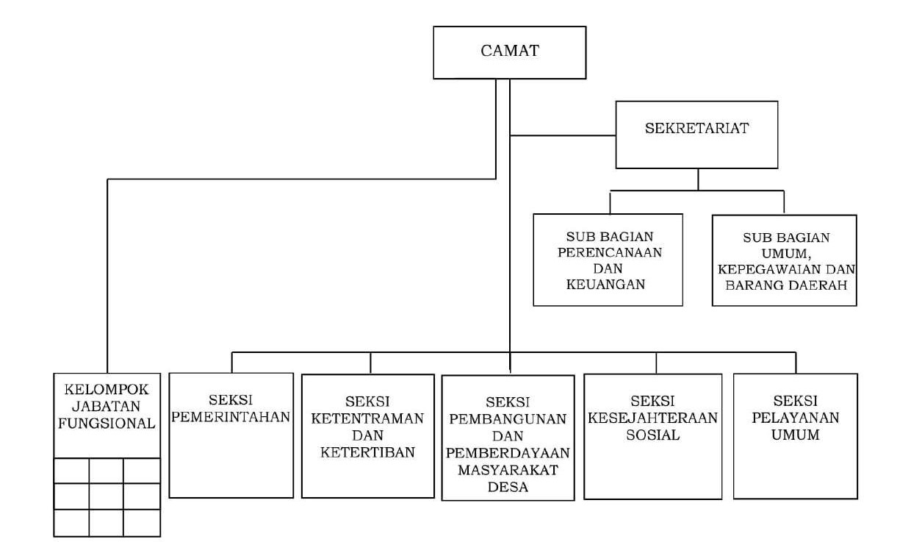

Struktur organisasi Kecamatan Jalancagak merupakan susunan bagian kerja yang memiliki tugas dan tanggung jawab masing-masing dalam menjalankan pelayanan pemerintahan dan pelayanan kepada masyarakat. Struktur organisasi ini dipimpin oleh seorang Camat yang bertugas mengoordinasikan seluruh kegiatan pemerintahan di tingkat kecamatan.
Dalam pelaksanaan tugasnya, Camat dibantu oleh Sekretariat Kecamatan serta beberapa seksi dan sub bagian yang memiliki fungsi berbeda-beda seperti pelayanan umum, pemerintahan, ketertiban, pembangunan, dan pemberdayaan masyarakat. Seluruh bagian tersebut saling bekerja sama untuk meningkatkan kualitas pelayanan publik serta mendukung pembangunan wilayah Kecamatan Jalancagak.
Selain memiliki fungsi administratif, struktur organisasi Kecamatan Jalancagak juga berperan penting dalam menjaga koordinasi antarbagian agar seluruh kegiatan pemerintahan dapat berjalan secara efektif dan efisien. Setiap bagian dalam struktur organisasi memiliki tanggung jawab tertentu sesuai bidang kerja masing-masing sehingga pelayanan kepada masyarakat dapat dilakukan dengan lebih terarah dan profesional. Adanya pembagian tugas yang jelas membantu meningkatkan kualitas pelayanan publik di lingkungan Kecamatan Jalancagak.
Struktur organisasi yang baik juga mendukung proses pembangunan daerah, pengelolaan administrasi, serta pelaksanaan program pemerintah yang berkaitan dengan kepentingan masyarakat. Berbagai kegiatan seperti pelayanan administrasi kependudukan, pembangunan infrastruktur, pembinaan masyarakat, hingga pelayanan sosial dilakukan melalui koordinasi antarbagian dalam organisasi kecamatan. Hal tersebut bertujuan agar seluruh program dapat berjalan sesuai dengan kebutuhan masyarakat dan peraturan yang berlaku.
Melalui struktur organisasi yang tertata dengan baik, Kecamatan Jalancagak diharapkan mampu menciptakan pelayanan pemerintahan yang lebih cepat, transparan, dan akuntabel. Kerja sama antara pimpinan, pegawai kecamatan, serta masyarakat menjadi faktor penting dalam mendukung terciptanya pemerintahan yang profesional dan mampu memberikan pelayanan terbaik bagi seluruh masyarakat Kecamatan Jalancagak.